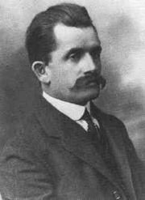

Ferdinand Porsche historia
Ferdinand Porsche (ur. 3 września 1875 w Maffersdorf, zm. 30 stycznia 1951 w Stuttgarcie) – konstruktor samochodów i innych pojazdów mechanicznych. Urodzony w Austro-Węgrzech, większość życia spędził w Niemczech. Doctor honoris causa kilkunastu światowych uczelni.
Prace
Karierę konstruktora samochodów rozpoczął od pracy w przedsiębiorstwie Jakob Lohner & Co. Jego pierwszymi konstrukcjami były prototypowe pojazdy elektryczne – pierwszy z nich, wyposażony w dwa silniki w piastach przednich kół, został zaprezentowany na Wystawie Światowej w Paryżu w 1900. Drugim samochodem był pojazd czterosilnikowy Lohner-Porsche[3], będący pierwszym na świecie samochodem z napędem na cztery koła. Prędkość maksymalna auta wynosiła ok. 60 km/h. Samochód został zbudowany na zlecenie zamożnego Anglika, E.W. Harta. W kolejnych latach projektował pojazdy z napędem hybrydowym, w których do napędu nadal służyły silniki elektryczne (silnik spalinowy napędzał jedynie prądnicę zasilającą silniki elektryczne). Według różnych źródeł, do 1906 wyprodukowano ponad 300 zaprojektowanych przez niego pojazdów hybrydowych
